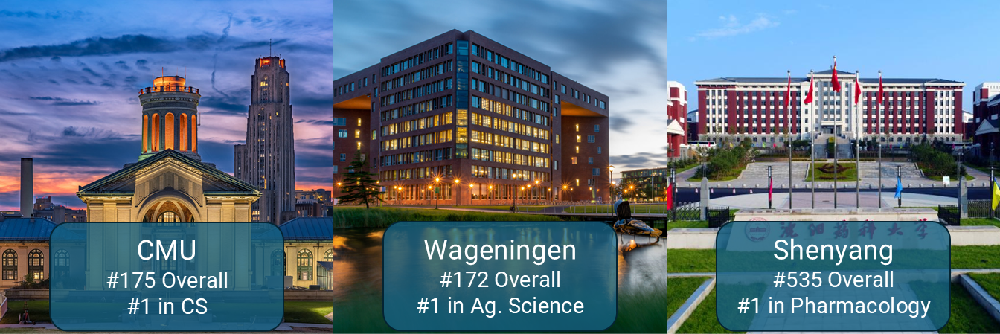
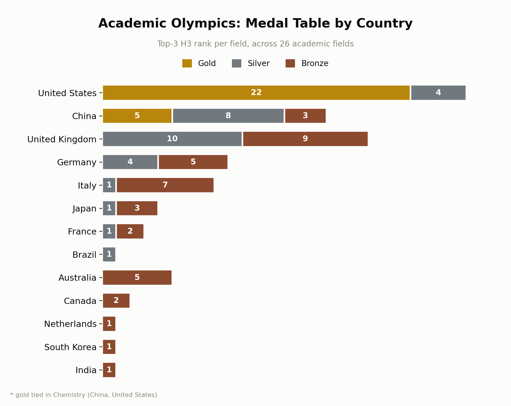

The US Wins 22 of 26 Golds in the Academic Olympics. China Wins the Rest, and It's All STEM.
Posted on July 7, 2026 • 8-minute read

CMU ranks #1 in CS but 175th overall; Wageningen ranks #1 in Agricultural and Environmental Sciences but 172nd overall; and Shenyang Pharmaceutical University ranks #1 in Pharmacology but 535th overall. The US still leads overall, but Chinese universities are the new global STEM elite. Meanwhile, Brazil has quietly built the university with the deepest bench of dentistry faculty in the world.
Contents
The 15-Year-Old Prediction
In 2007, András Schubert published a paper titled "Successive h-indices." It begins:
Hirsch's excessively discussed h-index generated a long row of interpretations, applications and derivatives within a surprisingly short period. Symptomatically, Hirsch's paper in the Proceedings of the National Academy of Sciences of the United States of America became the second highest cited paper of the issue in which it had been published. In this note, attention is called to an apparently so far overlooked option: h-indices themselves may form the basis of a successive series of h-indices.
Given, e.g., the h-indices of the researchers of an institute (which indices will be denoted by h1 in what follows), an index, h2, of the institute can be determined: the institute has an index h2 if h2 of its N researchers have an h1-index of at least h2 each, and the other (N-h2) researchers have h1-indices lower than h2 each. The succession can then be continued, e.g., for networks of institutions or countries or other higher levels of aggregation.
Since no sufficient data for testing the concept on the researcher-institute-country hierarchy were available, another example was chosen.
Fifteen years later, OpenAlex launched a FOSS bibliographic catalogue complete with citation indexing, authors, fields, and institutions. We now have the dataset for which Schubert wished in 2007. Schubert implied that computing the h2 of institutes would be more interesting than that of journals. This is that analysis.
Concept
Successive h indices are fundamentally different from raw citation counts. They measure depth of bench, not total output. A department with 10 world-class researchers and 1,000 mediocre ones scores lower than a department populated only by 30 world-class researchers.
- h1: the original h-index, measures the impact of an individual researcher
- h2: h-index of h-indices, measures universities by asking "how many researchers at this institution have an h1 ≥ h2"
- h3: h-index of h2s at the country level
Results
US News is a biomedical ranking in disguise
The overall ranking aligns with the US News list:
| Rank | Institution | h2 | US News Rank |
|---|---|---|---|
| 1 | Harvard University | 137 | 1st |
| 2 | Stanford University | 107 | 3rd |
| 3 | University of Cambridge | 105 | 5th |
This alignment is mostly due to medicine dwarfing the h2 of every other field. If you exclude the biomedical core, the ranking becomes:
| Non-Bio Rank | Institution | Non-Bio h2 | Rank Change |
|---|---|---|---|
| 1 | Harvard University | 100 | 0 |
| 2 | University of Antwerp | 97 | 12 |
| 3 | California Institute of Technology | 94 | 12 |
Harvard is genuinely excellent, but its dominance is not universal: it misses the top 100 for Chemical Engineering, Veterinary, Energy, and Agricultural Sciences.
Wageningen University, not a famous "elite" name in the US News sense, is #1 globally in both Agricultural Sciences and Environmental Science. It's ranked 172nd in the overall list because it's a specialized institution rather than a broad research university. The university-level ranking obscures leadership that the field-level h2 reveals.
Shenyang Pharmaceutical University: 535th overall, 1st in Pharmacology. A university you'd never see in a US News-style "Top 100" has the single deepest bench of high-impact pharmacology researchers on Earth by this measure.
Carnegie Mellon: 175th overall, #1 in Computer Science. CMU is famous for CS but is not a broad biomedical/everything powerhouse, so it sits outside the top 100 overall, yet it has the single deepest bench of high-impact CS researchers by this metric. This is the metric correctly capturing reputation that everyone already "knows" but that the broad ranking would never surface, since CMU lacks Harvard's massive medical school tail. In contrast, US News ranks CMU at 112th overall and 14th in CS.
Academic Olympics

A few things stand out:
- US wins 22 of 26 golds: dominant across every humanities, social science, biomedical, and prestige-science field. Its only silvers are the four fields where China wins outright: Chemical Engineering, Energy, Engineering, Materials Science. Chemistry is a tie, so the US and China share that gold.
- China's 5 golds are in STEM: Chemical Engineering, Chemistry (tied with the US), Energy, Engineering, and Materials Science. A clean sweep of applied and materials sciences, with no medals in arts, humanities, social sciences, or business.
- Great Britain gets 10 silvers and 9 bronzes, but zero golds: consistent with the UK having world-class institutions but being outgunned by the US sheer depth everywhere.
China has already won STEM, not "catching up." Five gold medals (one shared with the US), all in applied science and engineering fields. Zero medals in arts, humanities, social sciences, or business. Materials Science, Chemical Engineering, Energy, and Engineering are led by Chinese institutions. University of Science and Technology of China and the Chinese Academy of Sciences top those fields, not Western institutions, and not the usual US News top 10. This tracks with broader trends in Chinese investment in materials/engineering research, but it's notable that it shows up this cleanly in a depth-of-talent metric, not just a publication-count metric. USTC leads three of these fields while sitting at #39 overall. That's a different pattern from CMU: not a single specialty, but a cluster of related applied-science/engineering fields where one institution has built unusually deep strength across the board. This is a present-tense fact buried under Western prestige rankings that weight the fields where the US still leads.
Brazil is really good at dentistry. Universidade de São Paulo leads Dentistry, with a fellow Brazilian institution (UNICAMP) in 6th. A country that appears nowhere in elite research rankings has quietly built the university with the world's deepest bench of dental researchers.
Looking at the raw rankings by h3:
- Germany (49) beats the UK (47) despite a similar institution count (505 vs 548), consistent with Germany's distributed research university system where excellence isn't concentrated in two flagship universities.
- Italy (45) almost ties Japan (46), even though Italy gets there with a fraction of the institutions (229 vs 1,358). Across all countries, h3 scales as a power law of institution count, with institution count alone explaining 92% of variance. By this efficiency metric, Italy ranks 1st, Australia 2nd, and Spain 3rd. The US, with 4,242 qualifying institutions, nearly 8× more than China and 18× more than Italy, falls to efficiency rank 34 despite its raw h3 lead.
- South Korea (37) outranks India (34) with less than a third the institutions (358 vs 1,154). Same pattern as Italy/Japan.
- Saudi Arabia (h3=25, only 52 institutions) ranks surprisingly high for its size, likely an artifact of high-h-index researchers listing Saudi affiliations as secondary appointments in exchange for grants.
Physics & Astronomy is dominated by a few institutions; Veterinary is most distributed
Physics & Astronomy is the most unequal field (Gini=0.60). University of Antwerp dominates at 16× the field h2 mean. Decision Science and Veterinary are the most distributed (Gini=0.42). Counter-intuitively, Medicine's Gini, 0.53, is quite middle despite Harvard's 14× ratio, because Medicine has more institutions with meaningful h2.
UCLA has the greatest breadth
UCLA appears in the top 50 across more fields (20 of 26) than anyone else, and they're in the top 10 in 8. Harvard, not far behind, makes the top 10 in 13 of 26 fields (most of any institution) and has 19 in the top 50.
The most efficient universities have very few authors
h2 scales as a power law of author count. Among universities with at least 100 authors, Bellevue University has the greatest efficiency, followed by Augustana University and Germany's Center for Behavioral Brain Sciences. Among those with at least 5,000 authors, the UC California System is the only institution in the top 100 on both raw h2 and efficiency simultaneously (h2 rank 73, efficiency rank 66).
What This Doesn't Mean
h2 and h3 aren't comparable across fields. Stanford's #1 in Decision Sciences is H2=22, built on a field of under 43,000 authors total. Medicine's #1 is H2=119, built on over 7.5 million. Decision Sciences may just be too thin an OpenAlex category to support a meaningful index at all. Compare rankings within a field all you want; comparing the raw number across fields is comparing different rulers.
Depth isn't a synonym for quality. h2 and h3 measure how many researchers and institutions clear a rising bar, not whether the bar is pointed at the right problems, whether the work replicates, or whether a field's citation norms inflate or deflate everyone in it equally. A country or department can have real depth by this metric and still be optimizing for something you wouldn't want more of.
The whole stack inherits OpenAlex's own errors. h1 comes from OpenAlex's author disambiguation, and disambiguation fails in predictable places: common names and non-Anglophone institutions. A spot-check of 19 authors at exactly these failure points found 4 with implausibly large discrepancies against Scopus/Web of Science/Google Scholar, all in that same risk group. Because h2 and h3 are built directly on h1, a handful of merged identities at the right institution could nudge a ranking. That's a limitation of the underlying data, not something this analysis can fix. Treat institution- and country-level results as directionally right, not exact to the last integer.
Conclusion
I'm adapting this into a submission for Scientometrics, and I'm even chatting with the original author, András Schubert. Before it goes to a reviewer, I'd like to get your thoughts. In addition to your own questions, I have some of my own:
- Egghe's power-law functional form is empirically well-supported: S1/β1 explains 91% of the variance in h2, and R1/β2 explains 92% of the variance in h3. But his theoretical compounding prediction fails badly: separately fitting \(\alpha_0=2.742\) and \(\alpha_1=2.996\) gives a predicted \(\beta_1=\alpha_0\alpha_1=8.21\), against the directly-measured \(\beta_1=2.963\), a 177% discrepancy. The same failure appears at the country level. The model works empirically; the underlying derivation does not. Does anyone have a theory for why?
- Does my field assignment of every author to a single, weightiest field penalize interdisciplinary researchers?
- I'm calling it "specialist erasure" when a university with the single deepest department in a field worldwide (e.g., CMU in CS or Wageningen in Ag Sciences) disappears from broad overall rankings. Is that framing fair?
- A spot check of 19 authors at OpenAlex's known failure points (e.g., common names and non-Anglophone institutions) found 4 with implausible discrepancies against Scopus/WoS/Google Scholar (and it also found large discrepancies between those three "ground truth" sources). Since h2 and h3 are built directly on h1, is a 4/19 hit rate at the highest-risk points problematic?